Fun with Flow Models
In this project, I explore how flow models turn noise into images. Part A uses a pretrained model for denoising, image editing, and optical illusions. Part B builds a flow-matching model from scratch on MNIST.
Part A: Exploring the Power of Flow Models
I use the pretrained PixNerd-XXL-P16-T2I model to denoise images, generate new images from noise, and edit images with text prompts. I also combine its predictions to create visual anagrams and hybrid images.
Input images are center-cropped and resized to 512 × 512 and normalized to [−1, 1]. Sampling uses an Euler step size of 0.02. For classifier-free guidance, I use w = 7 and an empty prompt for the unconditional prediction.
1.1: Constructing Noisy Training Inputs
I use my Griffith Observatory photograph throughout Sections 1.1–1.5. Starting with one Gaussian noise tensor ε generated with seed 180, I form three noisy inputs by interpolating between the noise and the original image:
At t = 0 the input is pure noise; at t = 1 it is the clean image. Increasing t preserves more of the observatory, skyline, and sunset. I reuse the same image and noise in the following comparisons and check that interpolation recovers both endpoints exactly.
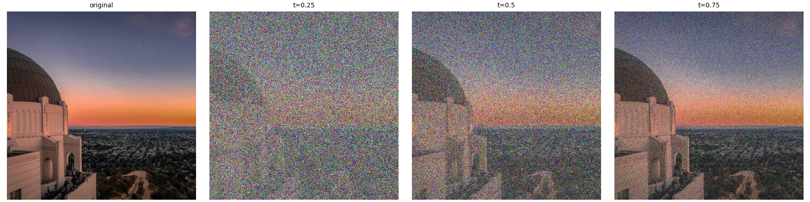
1.2: Classical Denoising
As a classical baseline, I first divide the noisy image by t to restore the amplitude of the image contribution, then apply Gaussian blur. This division also amplifies the noise, so it does not recover the original by itself.
For each time, I try σ ∈ {1, 2, 4, 8, 16} and choose the result with the lowest mean squared error against the known clean image, before display clipping. The kernel width is 6σ + 1. This uses the original to select the best baseline; it is not a learned denoiser.
Noisy inputs (left) and Gaussian-denoised results (right).
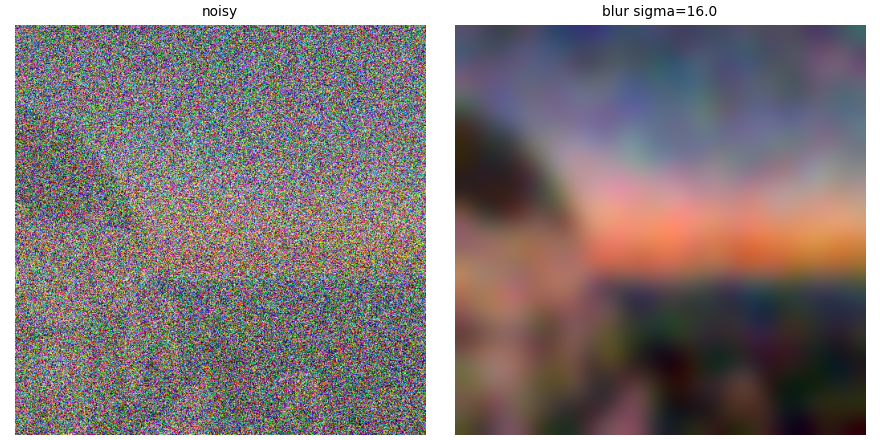
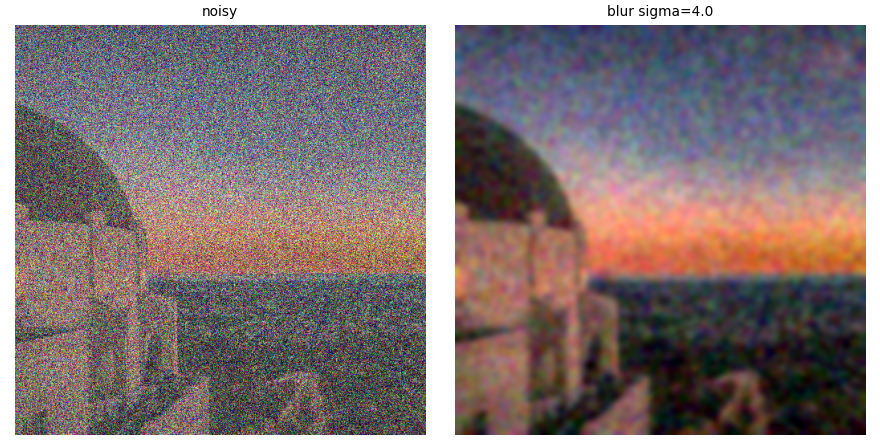
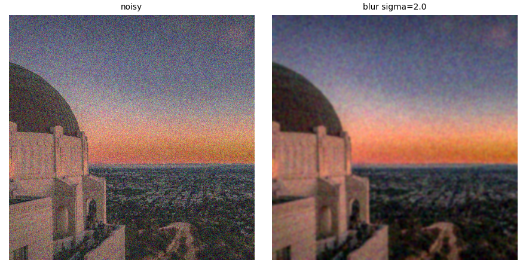
At t = 0.25, the strongest blur removes much of the noise but also erases architectural detail. At t = 0.75, a smaller blur keeps more of the building and city, although visible noise remains.
1.3: One-Step Denoising
The pretrained model predicts velocity, rather than noise. For each saved input, I make one prediction with the prompt “a high quality photo” and extrapolate over the remaining time to the clean endpoint:
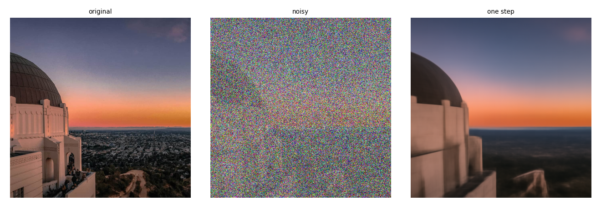
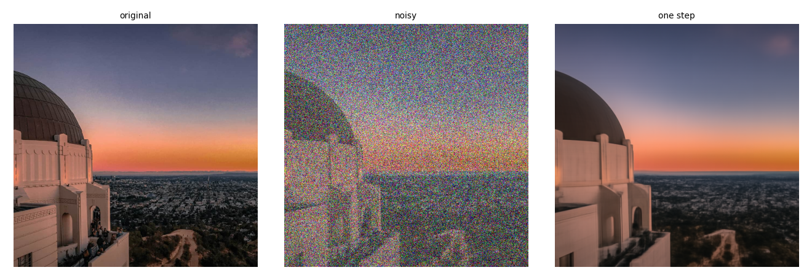
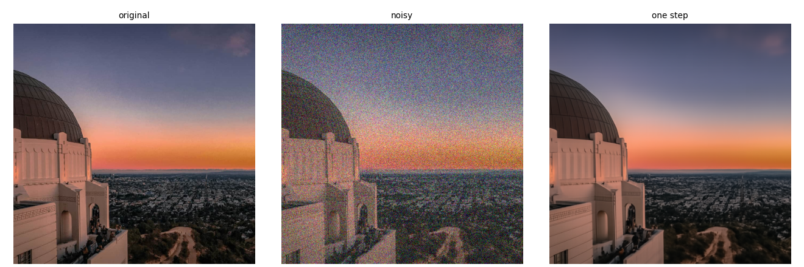
The one-step estimates recover the broad building shape and sunset much more clearly than Gaussian blur. At low t, the dome and city become smooth and lose fine detail. With more of the original retained at t = 0.75, the estimate also preserves more of that detail.
1.4: Visualizing Velocity
Because the original image and sampled noise are known, I can compare the predicted update with the exact update needed to recover this particular image. The ground-truth path velocity is x1 − ε.
Δt = (1 − t)(x1 − ε) = x1 − xt
Et = √meanRGB[(Δ̂t − Δt)²]
I compute the error before clipping or display scaling, averaging only over RGB so each pixel has one error value. All update images share one symmetric scale with zero at middle gray. The error maps use one shared linear scale across the three times; brighter colors indicate larger error.
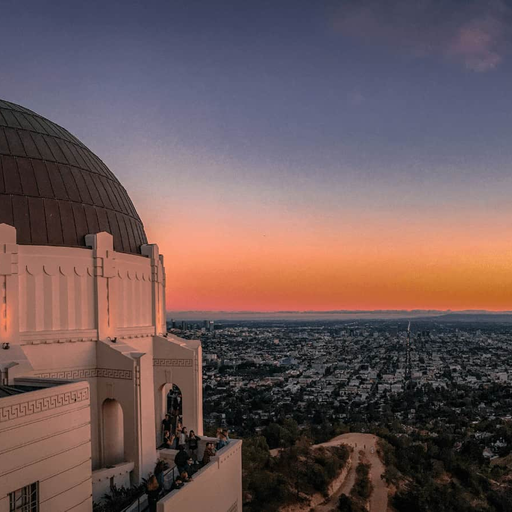
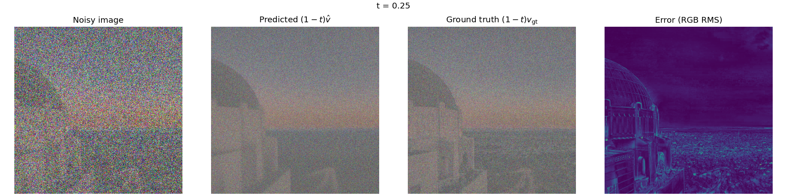
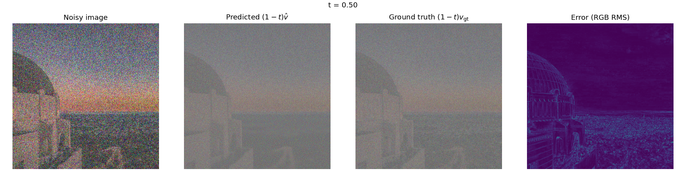
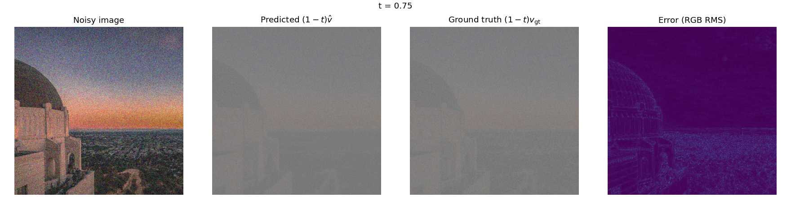
Errors are most visible around the dome, building edges, and detailed city texture. The sky is comparatively easy to recover. The maps become darker at larger t as the required correction becomes smaller.
1.5: Iterative Denoising with Euler Sampling
A one-step estimate follows the current velocity all the way to t = 1. Euler sampling instead takes a small step, evaluates the velocity at the new image and time, and repeats:
I start with the saved t = 0.50 input and take 25 updates of size 0.02 using “a high quality photo,” without CFG. The sampler shortens the final step when necessary to end at t = 1. Checks against a constant velocity field pass for starts at 0, 0.50, and 0.93, including the shortened final step.

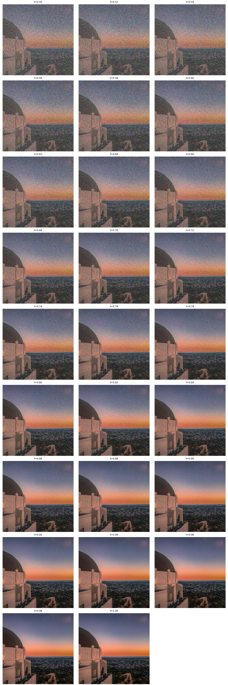
Comparing the denoising methods
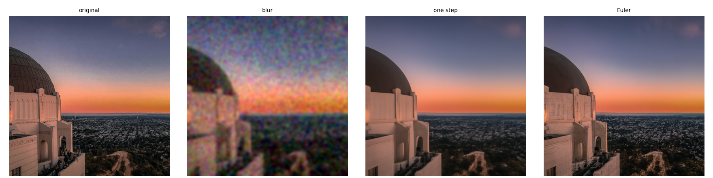
| Method | MSE |
|---|---|
| Gaussian blur (σ = 4) | 0.013638 |
| One-step estimate | 0.006067 |
| Euler, 25 updates | 0.007655 |
Euler restores more visible texture to the building and city, while the one-step image looks smoother. However, one-step denoising has the lowest reconstruction MSE in this run. The extra texture in the Euler result does not necessarily match the original pixels, so a more detailed-looking image is not automatically a more accurate reconstruction.
1.6: Generating Images from Noise
To generate images from scratch, I start at t = 0 with independent Gaussian noise and take 50 Euler steps to t = 1. These five samples all use the prompt “a high quality photo”, with no classifier-free guidance.

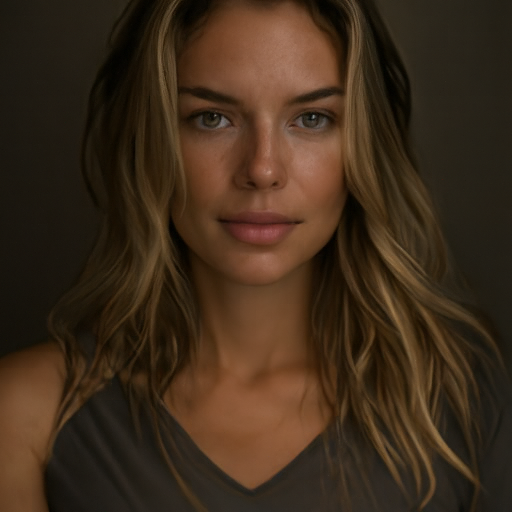

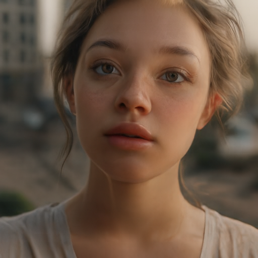

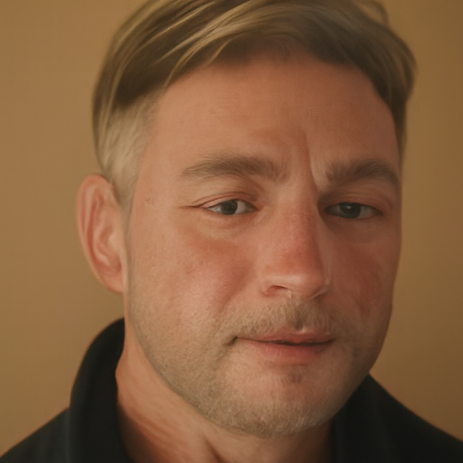


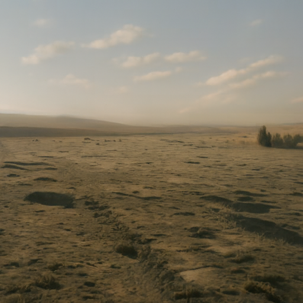
Four of the five samples are portraits, while seed 304 produces an open landscape. Even this generic prompt strongly favors portraits in these samples, though it does not specify a subject. I keep these exact initial noises for the CFG comparison below.
2.1: Classifier-Free Guidance
Classifier-free guidance evaluates the same image and time with both the text condition and an empty-string prompt. I combine the two velocity predictions using Part A’s convention:
Here, w = 0 recovers ordinary conditional sampling; I check this equality in the notebook. I then generate another five samples using the same seeds 300–304, prompt, and step size as Section 1.6.

Seed 301

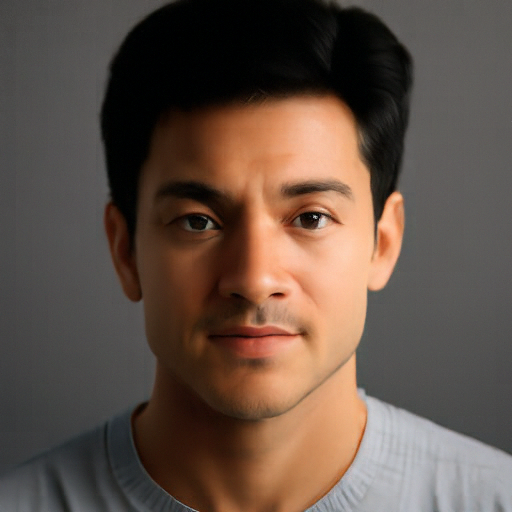
Seed 302

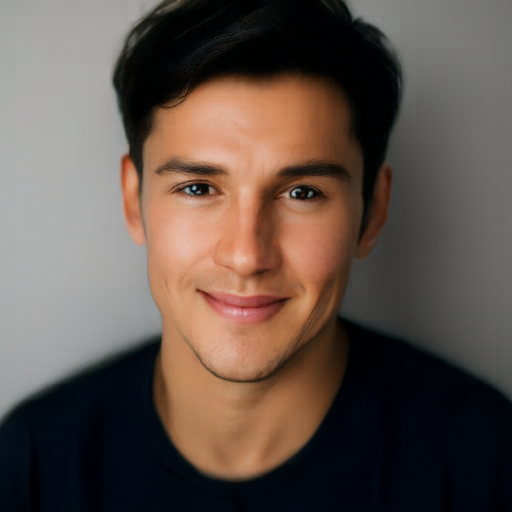
Seed 303

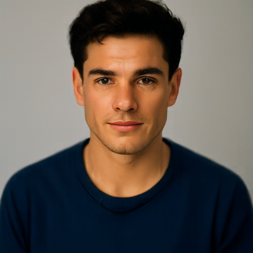
Seed 304

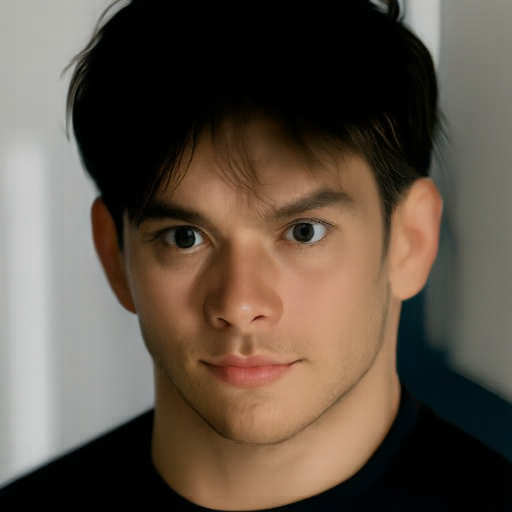
The guided samples have more consistent portrait framing, smoother backgrounds, and stronger facial definition. All five are now portraits: the landscape at seed 304 becomes a face. In this small comparison, guidance reduces subject diversity and can change the subject substantially even when the starting noise stays fixed.
3.1: Image-to-Image Editing
For image-to-image editing, I interpolate an existing image with noise at a chosen starting time, then integrate from that time to 1 using CFG. I use the prompt “a high quality photo”, w = 7, and h = 0.02.
Each sweep uses the same noise from seed 180 at all seven starting times: 0.02, 0.04, 0.06, 0.10, 0.14, 0.25, and 0.50. Lower starting times retain less of the input and allow larger changes. Higher starting times preserve more of the original.
In every editing grid, read left to right across the top row, then the bottom row: original, t = 0.02, 0.04, 0.06, 0.10, 0.14, 0.25, 0.50.
Campanile

At the smallest starting time, the tower becomes a smooth, rounded object. The vertical silhouette returns before the clock and belfry details; by t = 0.25–0.50 the image closely resembles the original.
Mountain goat
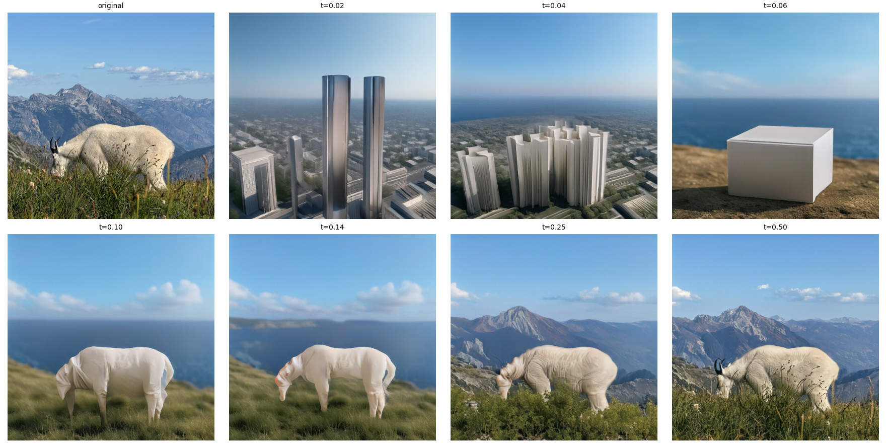
At t = 0.02–0.06, the goat is replaced by buildings or a white block. At t = 0.10–0.14, the model produces a grazing animal but changes its appearance and surroundings. Higher starting times restore the goat and mountain backdrop.
Deer
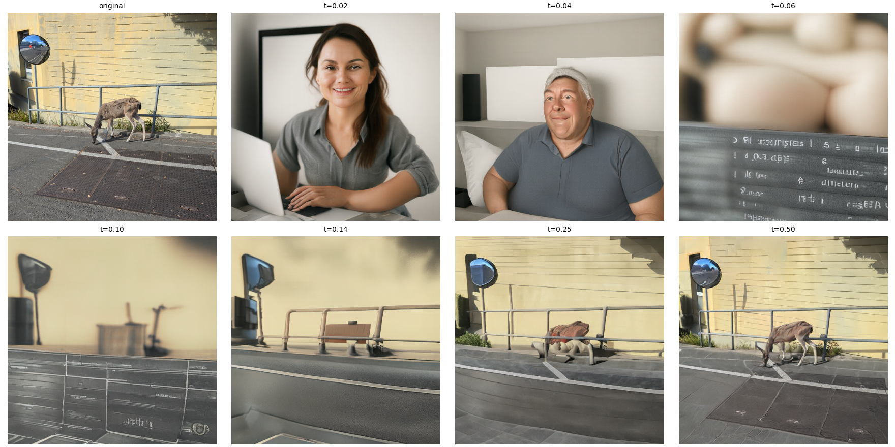
The low-time samples turn into portraits or unrelated objects. The yellow wall and roadside composition return around t = 0.10–0.14, before the deer itself becomes recognizable at t = 0.25–0.50.
Editing hand-drawn and web images
I apply the same procedure to a downloaded landscape painting and two drawings. These inputs test how the photo prompt interprets shapes that are not already photographs.
Downloaded Painting
Albert Bierstadt, Among the Sierra Nevada, California, 1868. Source: Smithsonian American Art Museum.
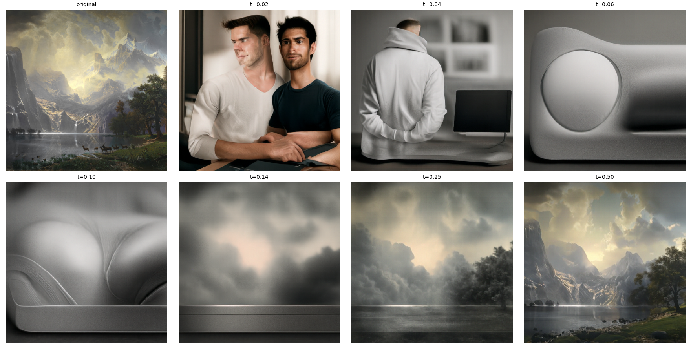
At low starting times, the painting becomes unrelated people or smooth gray forms. Around t = 0.25, it becomes a soft landscape; at t = 0.50, much of the original painted scene returns.
My Telescope Drawing
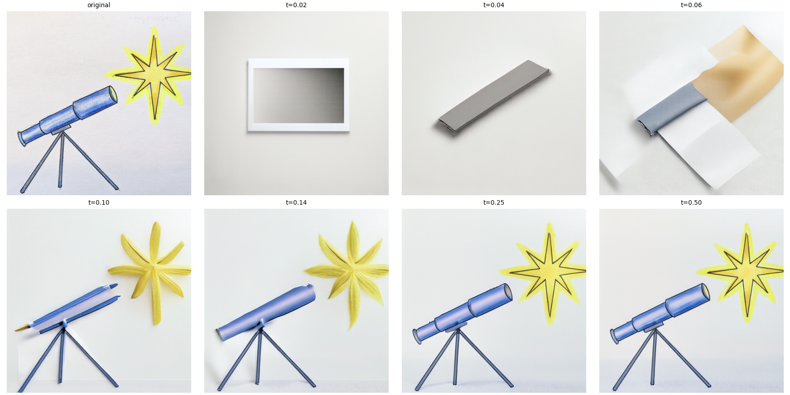
At t = 0.02–0.06, the model interprets the drawing as simple manufactured objects. Around t = 0.10–0.14, the blue telescope and yellow star gain smoother, more dimensional shading. At larger times, the drawn outlines return.
My Frankenstein Drawing
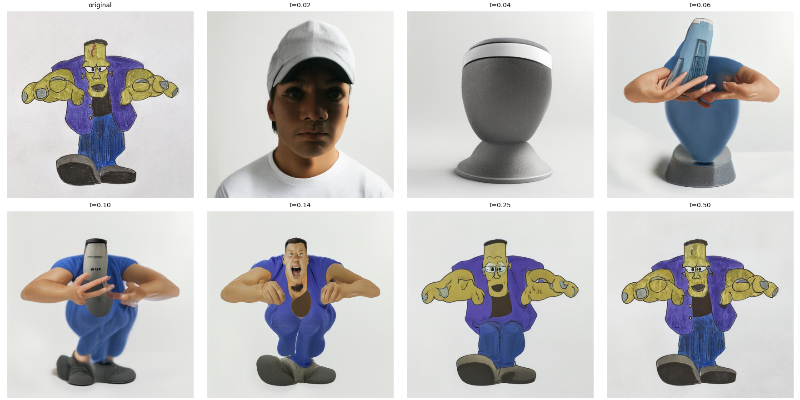
Low starting times yield a portrait or rounded object. Intermediate times reinterpret the arms and torso as a toy-like figure; by t = 0.25–0.50, the original drawing is largely preserved.
3.2: Text-Guided Image Editing
I repeat the same editing sweeps but replace the generic photo prompt with a description of the desired transformation. The original inputs, seven starting times, seed 180, CFG weight 7, and Euler step size 0.02 stay the same.
These results show the tradeoff between following the prompt and preserving the image. With little original signal left, the model can generate a new scene. At intermediate times, the prompt reshapes recognizable parts of the input.
Sather Stairway
Prompt: “a photograph of a grand staircase ascending into the clouds”
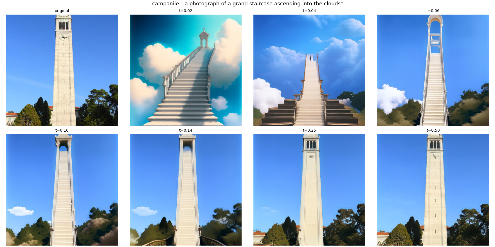
At t = 0.02, the result is a staircase surrounded by clouds. Between t = 0.06 and 0.14, the tower’s tall shape becomes a narrow staircase, retaining the original framing. At t = 0.25–0.50, the Campanile dominates again.
Goat-riffin
Prompt: “a photograph of a griffin flying above a canyon”
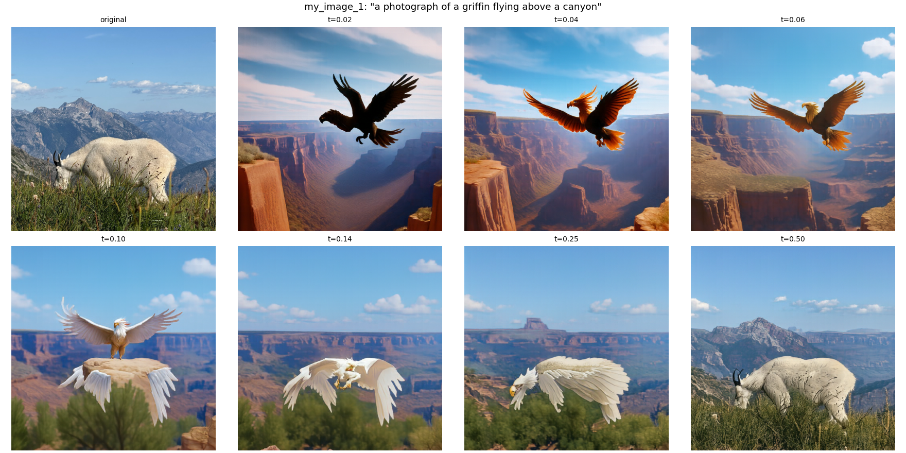
At low starting times, the prompt produces winged creatures above a canyon, although several look more like birds than griffins. Intermediate times mix wings with the original animal’s pose. At t = 0.50, the mountain goat remains almost unchanged.
Ho, Ho, Halloween!
Prompt: “a photograph of a reindeer eating a pumpkin”
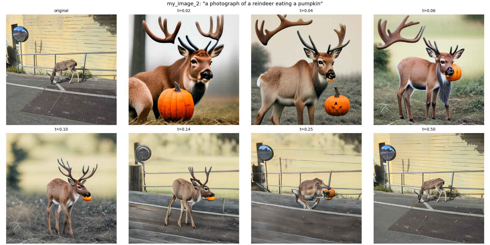
At low starting times, the deer gains prominent antlers and a pumpkin in a new setting. Around t = 0.14–0.25, the yellow wall and road return while the pumpkin remains near the animal’s mouth. The original deer is largely preserved at t = 0.50.
3.3: Visual Anagrams
For a visual anagram, I ask one prompt to explain the upright image and another to explain the image rotated 180°. At each Euler step, I rotate the second velocity prediction back into the original orientation, average the two guided velocities, and update the image.
R flips both spatial axes, giving a 180° rotation. I check that rotating twice returns the original tensor. Both examples start from pure noise and use 50 Euler updates with w = 7. Each pair shows the upright view on the left and the 180° rotation on the right.
First Contact (Seed 180)

The alien’s head is the strongest upright shape. Rotating the image brings a globe and human figures into view, although the alien’s features remain noticeable, so the two readings do not separate completely.
Night Underpass (Seed 181)

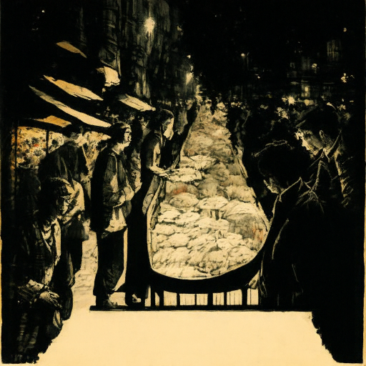
In the upright view, figures and stalls line a narrow market passage. After rotation, the bright opening reads as a canyon under a bridge. This pair gives a clearer change in interpretation.
3.4: Hybrid Images
To create a hybrid image, I combine low frequencies from one prompt’s guided velocity with high frequencies from another. Both predictions use the same current image and time. I then integrate this composite velocity with Euler sampling:
I use a Gaussian kernel of 265 × 265 with σ = 16, CFG weight 7, and 50 Euler steps. The larger view emphasizes detail; the same image shown at 64 × 64 pixels helps reveal its broad structure.
Monkeys / Owl (Seed 180)

Up close, the image shows two monkeys. At a distance, their combined shape reads as an owl, with the darker patches on the monkeys’ heads becoming the owl’s ear tufts.
Surfer / Car (Seed 181)

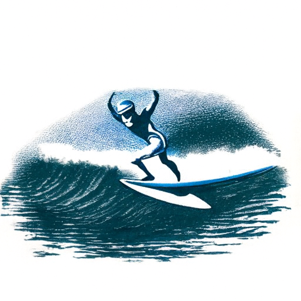
Up close, the image shows a surfer riding a wave. When viewed at a smaller scale, the shapes read as a blue, futuristic car with an amphibious appearance.
Part A: What I Learned
I learned how starting time controls the balance between preserving an image and changing it. Lower starting times gave the text prompt more influence, while higher starting times kept more of the original. Guidance also changed the variety of generated subjects: with the same five noise seeds, CFG turned the one landscape into another portrait.
The denoising results showed that more detail does not always mean a more accurate reconstruction. Euler sampling produced more texture, but the smoother one-step estimate had lower MSE. The anagrams and hybrids showed how a single image can support two interpretations, revealed by rotating it or changing the viewing scale.
Part B: Flow Matching from Scratch
I train UNets on MNIST, starting with single-step denoising and then learning a velocity field that turns Gaussian noise into digits. Adding class conditioning lets me choose which digit to generate.
The images are 28 × 28 grayscale digits with clean pixels in [0, 1]. I train on the 60,000 training images and use held-out test digits for the denoising comparisons.
1.1: Implementing the UNet
My UNet follows the assignment architecture. Two downsampling blocks reduce the spatial resolution from 28 × 28 to 14 × 14 and then 7 × 7, with channel widths D, D, and 2D. Average pooling and GELU produce a 1 × 1 bottleneck, and a transposed convolution expands it back to 7 × 7.
The decoder upsamples back to 28 × 28, concatenating encoder features at each matching resolution. These skip connections preserve spatial detail. Each ConvBlock uses two convolution–batch normalization–GELU layers; a final ConvBlock and convolution produce the single-channel output. I use D = 128 for the denoisers.
1.2: Adding Noise to MNIST
I create noisy inputs by adding Gaussian noise to a clean digit. The examples below use σ ∈ {0, 0.2, 0.4, 0.5, 0.6, 0.8, 1.0}; each noisy example has a fresh noise draw. As σ increases, the strokes become harder to distinguish from the background.
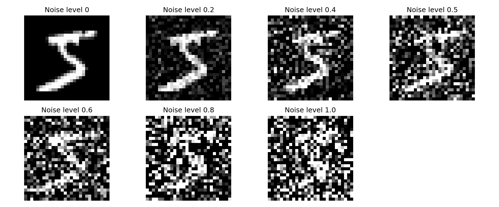
1.2.1: Training the Denoiser
I train for 5 epochs at σ = 0.5, using Adam with learning rate 10−4 and batch size 256. I draw fresh noise for each training batch and minimize the mean squared error between the predicted and clean pixels.
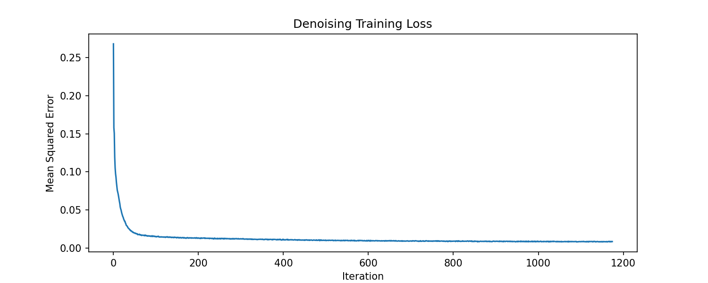
The loss drops quickly and then decreases more gradually. I compare the same five test images and fixed noisy inputs after epochs 1 and 5. The first checkpoint already recovers the digits; by epoch 5, the backgrounds are cleaner and the strokes are more consistent.


Middle row: Noisy inputs (σ = 0.5)
Bottom row: Denoised predictions
Each column: The same test digit
1.2.2: Out-of-Distribution Testing
I test the trained denoiser at noise levels outside its training setting of σ = 0.5. For each digit, I keep both the clean image and underlying noise fixed while varying σ, so the comparison isolates noise strength.
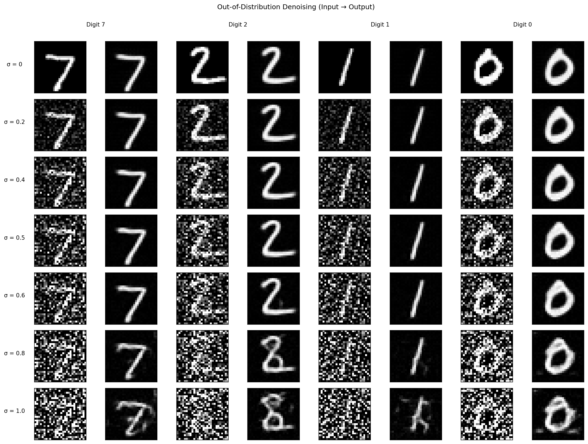
The model handles low and moderate noise well, but it starts changing the digit when the input becomes too ambiguous. At σ = 0.8 and 1.0, the 2 becomes an 8-like shape; the 1 also develops extra strokes at the highest noise level. Even at σ = 0, the network slightly smooths the clean image.
1.2.3: Denoising Pure Noise
I train a fresh UNet with the same settings, replacing the noisy digit input with independent Gaussian noise. Each input is paired with a clean training digit, but contains no information about that target. I evaluate the same eight noise inputs after epochs 1 and 5.
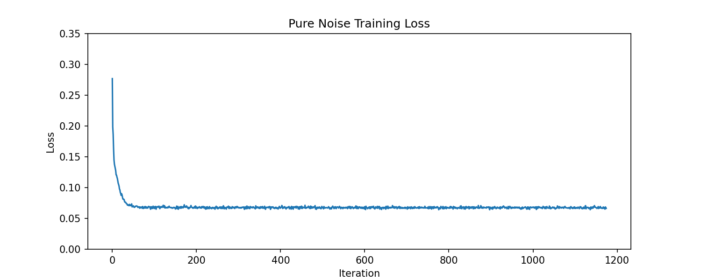
Noise inputs (top) and predictions (bottom).
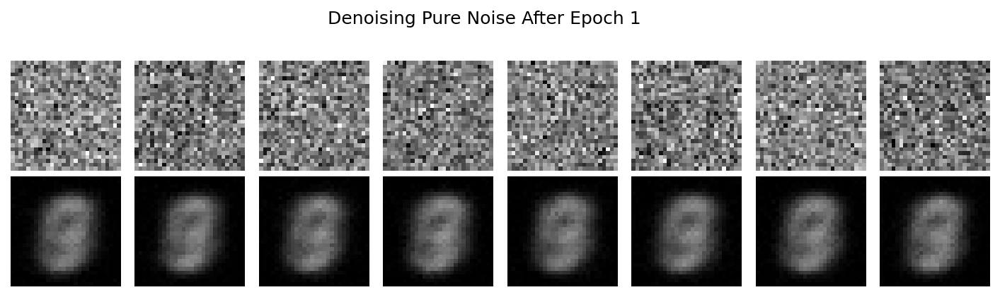
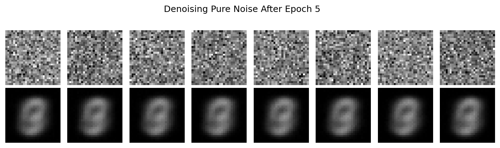
The loss drops rapidly and then fluctuates around 0.07 for the rest of training. At both epochs 1 and 5, the eight different noise inputs produce similar blurred, roughly oval shapes with faint internal structure. Small differences remain between outputs, but neither checkpoint produces a varied set of clearly recognizable digits.
Under squared error, the optimal prediction is the conditional mean E[x | ε]. Since each noise input is independent of its target digit, this reduces to E[x]: the pixelwise average of the training digits across classes 0–9. Predicting a specific digit would incur errors whenever the unrelated target had different strokes. Averaging minimizes the expected squared error across these possible targets.
This average is the centroid of the training images when each image is treated as a vector of pixel values. Pixels where strokes frequently overlap remain brighter, while differences in digit shape and handwriting blur together. The similar outputs are consistent with approximating this average, although I have not directly measured their similarity to the dataset mean. More training does not give the noise information about its target, so this objective continues to favor averaging rather than learning to generate diverse digits.
2.1: Adding Time Conditioning
For flow matching, I use a D = 64 UNet and give it the current time t. Two separate FCBlocks, each consisting of Linear → GELU → Linear, map the scalar time to 2D and D features. I broadcast these embeddings over the spatial dimensions and multiply them into the decoder features after unflattening and after the first upsampling block.
The network predicts a velocity at each pixel. During training, I draw a Gaussian image x0, a clean digit x1, and a continuous time t uniformly from [0, 1), then construct a point along their straight interpolation:
2.2: Training the Time-Conditioned UNet
I train for 10 epochs with batch size 64 and Adam starting at 0.01. After each epoch, an exponential scheduler multiplies the learning rate by 0.11/10. Fresh noise and times are sampled for each batch, and the objective is mean squared error against the target velocity.
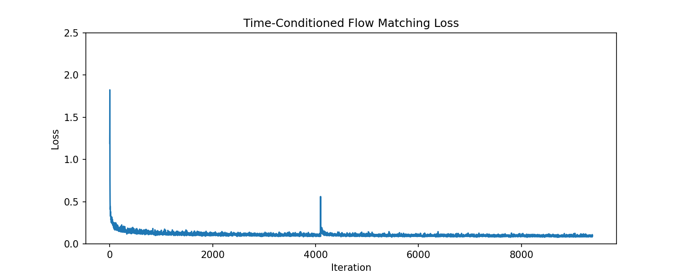
The loss falls rapidly, with a brief spike around iteration 4,100 before returning to its earlier trend. The first batch loss is 1.1915 and the last is 0.0952; the final batches fluctuate around 0.1.
2.3: Sampling from the Time-Conditioned UNet
I start from Gaussian noise at t = 0 and integrate the predicted velocity with 50 Euler steps, using h = 0.02 to reach t = 1. Each checkpoint uses seed 0, so the initial noise is identical across epochs.
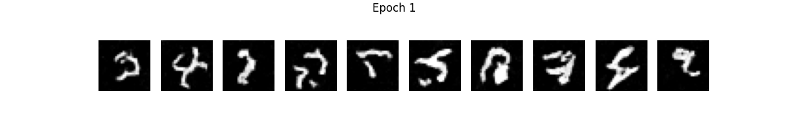
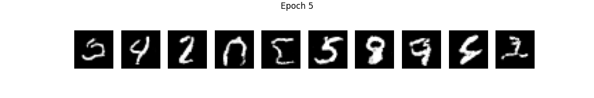
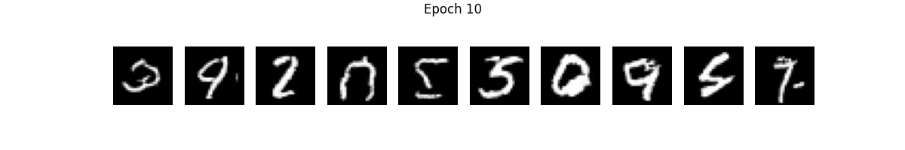
At epoch 1, several samples have broken or ambiguous strokes. By epochs 5 and 10, more recognizable digits emerge, including clear 2s, 4s, and 5s. Some shapes remain incomplete or hard to read, and individual samples do not improve uniformly between checkpoints.
2.4: Adding Class Conditioning
I encode the requested digit as a 10-dimensional one-hot vector and add two class FCBlocks alongside the time embeddings. At each conditioning location, the class embedding scales the features and the time embedding shifts them:
During training, I independently set each example’s class vector to zero with probability 0.1. This teaches the same model to predict velocities both with and without a digit label, enabling classifier-free guidance during sampling.
2.5: Training the Class-Conditioned UNet
I train a fresh class-conditioned UNet with D = 64 for 10 epochs, using batch size 64, Adam at an initial learning rate of 0.01, and the same exponential decay. The velocity objective and random time sampling stay the same.
The plots also include an independent run at a constant learning rate of 0.003. The full scale shows the initial spikes, while the closer view makes the later training behavior easier to compare.

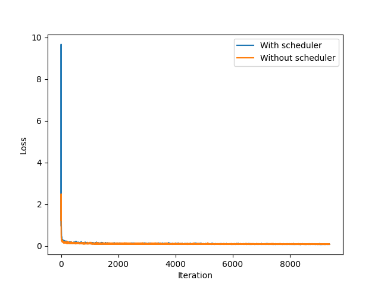

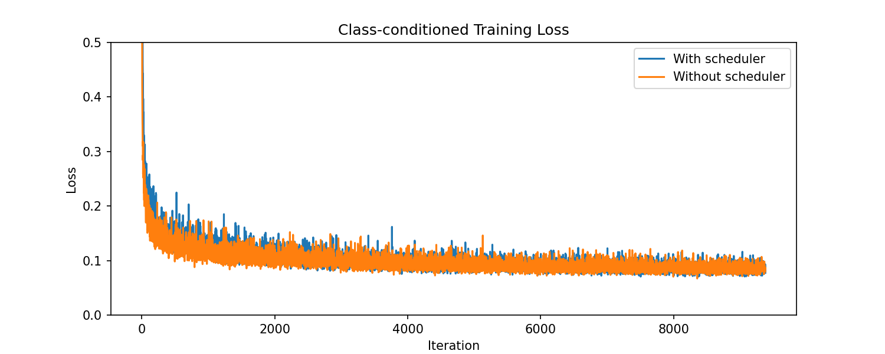
The run without a scheduler has a smaller initial loss spike and generally lower loss early in training. Later, the curves overlap closely and settle near 0.1. With these learning-rate choices, both runs reach similar training loss; this comparison also changes the initial learning rate, so it does not isolate the scheduler’s effect. I compare their generated digits in Section 2.6.
2.6: Sampling with Classifier-Free Guidance
I generate four instances of each digit using 300 Euler steps and seed 0 at each checkpoint. At every step, I combine predictions with and without the class label using guidance scale γ = 5:
Columns correspond to digits 0–9.
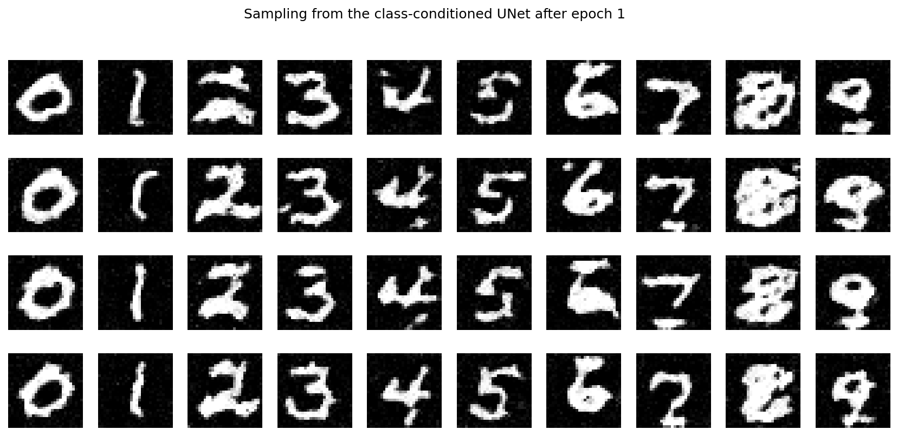
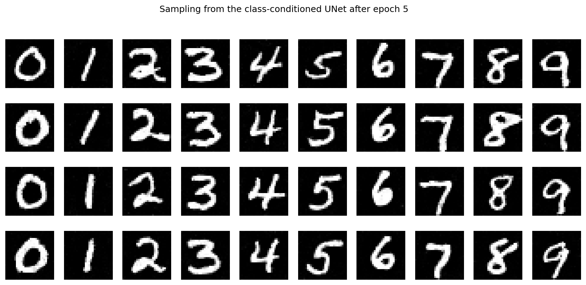
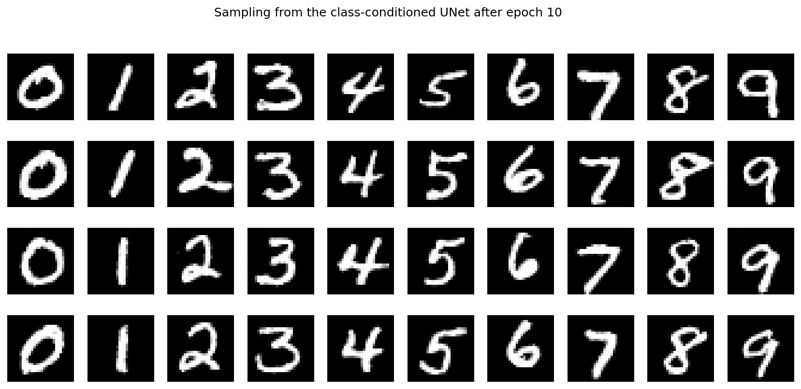
After epoch 1, many digits are recognizable, but several have thick, irregular strokes, especially the 8s. By epoch 5, the requested classes are much clearer. Epoch 10 retains that clarity while showing variations in stroke width, slant, and loop shape.
Removing the learning rate scheduler
For the separate run without a scheduler, I lower Adam’s learning rate from the scheduled run’s initial 0.01 to a constant 0.003. This reduces the update size from the start while still allowing the model to learn throughout all 10 epochs. I keep the architecture, batch size, class dropout, and sampling settings the same.
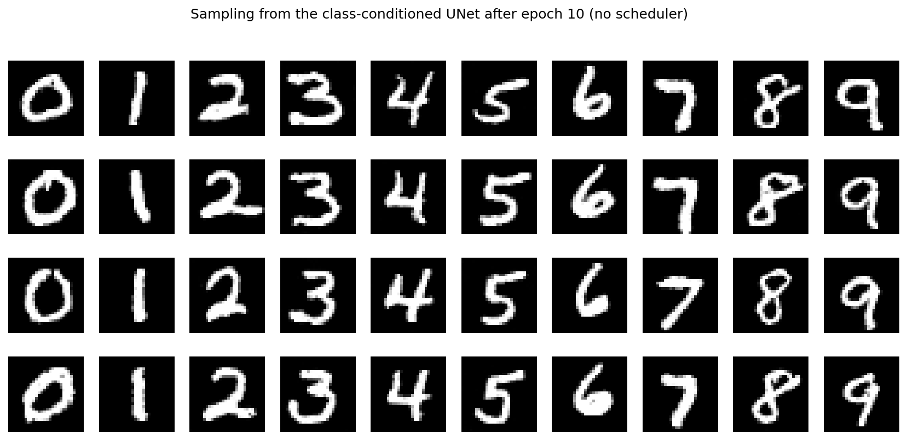
The fixed-rate model produces clear examples of all ten digits, and its loss closely tracks the scheduled run after the initial drop. The sample quality looks comparable in these grids. This suggests that the smaller constant learning rate is sufficient for this experiment, though these separate runs do not establish identical performance.
Part B: What I Learned
Building a flow model from scratch helped me understand how noise can gradually become an image. Starting with a simple denoiser made it easier to understand the network and its training objective before moving on to iterative generation. Implementing the sampling loop helped me connect the equations to the images I was seeing.
I also learned how time and class conditioning guide the model, and how choices during training and sampling affect its results. Working through these pieces myself made the pretrained model in Part A easier to understand.